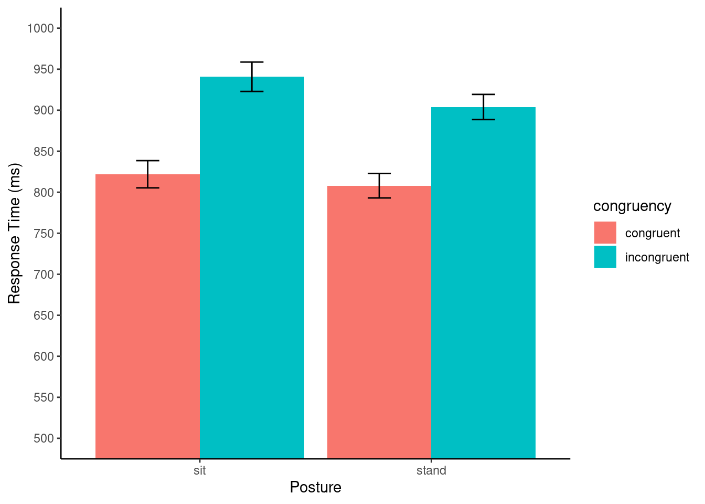
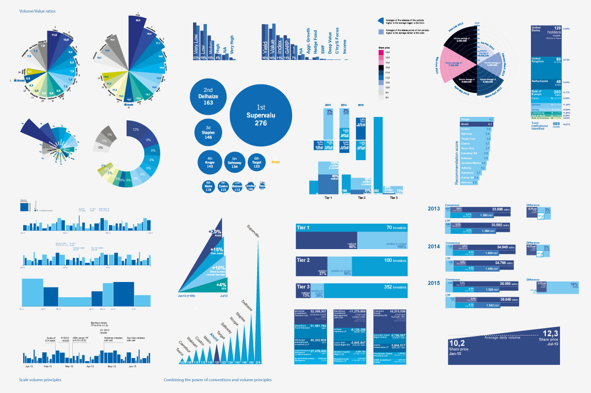

Title:
Research question
The purpose of this study was to determine whether standing up versus sitting down influences selective attention abilities [@rosenbaum2017stand].
The experiment involved a classic test of selective attention, called the Stroop effect [@stroop1935]. In a typical Stroop experiment, subjects name the ink color of words as fast as they can. On congruent trials the color and word match; and, on incongruent trial the color and word mismatch. For a review of the Stroop effect see @macleod1991.
The Stroop effect is the finding that reaction times are typically faster and more accurate on congruent compared to incongruent trials.
The Stroop effect could measure aspects of selective attention, or the ability to ignore distracting information. Selectively ignoring word information while attending to color information should cause smaller Stroop effects.
In the present study the researchers were interested in whether Stroop effects would be smaller in a condition when participants were standing up compared to sitting down. The general hypothesis was that standing up should improve selective attention abilities compared to sitting down, and this improvement would be detected in a smaller Stroop effect.
Data-sources
The authors have made their data available here https://osf.io/uwzsb/.
Original Figure
This final project will attempt to reproduce Figure 1 from the paper. The original figure 1 is shown below:

Reproducible analysis
library(tidyverse)
# load data
all_data <- rio::import("stroop_stand.csv")
# pre-process data
# make wide data longer
transformed_data <- all_data %>%
mutate( subject = 1:dim(all_data)[1] ) %>%
pivot_longer(!subject,
names_to = c("congruency","posture"),
names_sep = "_",
values_to = "RT")
# get means in each condition
plot_means <- transformed_data %>%
group_by(congruency,posture) %>%
summarise(mean_RT = mean(RT),
SEM = sd(RT)/sqrt(length(RT)),
.groups = "drop")
ggplot(plot_means, aes(x=posture,
y=mean_RT,
group=congruency,
fill=congruency))+
geom_bar(stat="identity", position="dodge")+
geom_errorbar(aes(ymin=mean_RT-SEM, ymax=mean_RT+SEM),
position=position_dodge(width=0.9),
width=.2)+
theme_classic()+
scale_y_continuous(breaks=seq(500,1000,50))+
coord_cartesian(ylim=c(500,1000))+
ylab("Response Time (ms)")+
xlab("Posture")
Discussion
This final project shows a successful attempt to reproduce the results from experiment 3 reported by @rosenbaum2017stand. The above graph shows the same pattern of data as reported by the authors. The main finding was that the Stroop effect, or difference in reaction time between incongruent and congruent conditions was larger in the sitting posture condition compared to the standing posture condition. This finding was consistent with the hypothesis that standing improves selective attention which caused a reduction in the Stroop effect
